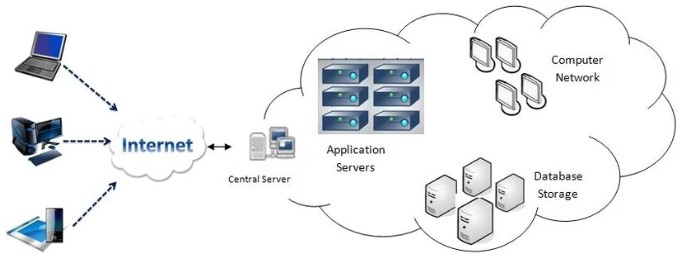
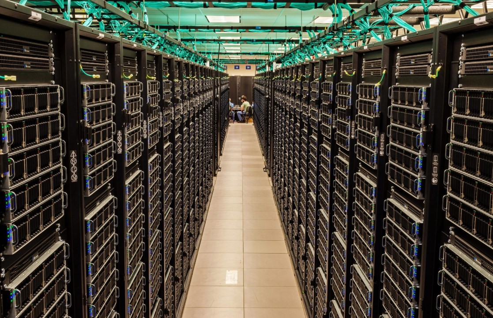

La evolución del hardware, el software y las redes transformó la informática en una tecnología presente en prácticamente todos los ámbitos de la sociedad.

INTERNET
Las redes informáticas evolucionaron hasta formar Internet, una infraestructura mundial que permite conectar computadoras y dispositivos e intercambiar información.
WORLD WIDE WEB
La World Wide Web permitió acceder a documentos y recursos mediante páginas enlazadas. Su desarrollo facilitó enormemente el acceso público a información a través de Internet.
SMARTHPHONES
Los teléfonos inteligentes combinan funciones de comunicación, procesamiento, almacenamiento, fotografía, navegación y acceso a Internet en un dispositivo portátil.
COMPUTACION EN LA NUBE
La computación en la nube permite utilizar recursos informáticos, almacenar datos y ejecutar servicios a través de Internet, sin que todo el procesamiento tenga que realizarse en el dispositivo del usuario.

INTELIGENCIA ARTIFICIAL
La inteligencia artificial reúne técnicas que permiten a los sistemas informáticos realizar tareas que requieren capacidades asociadas con la inteligencia humana, como reconocer patrones, procesar lenguaje o generar contenido.
SUPERCOMPUTACION
Las supercomputadoras son sistemas diseñados para realizar cantidades enormes de cálculos. Se utilizan en áreas como investigación científica, simulaciones, predicción climática y análisis de grandes cantidades de datos.
